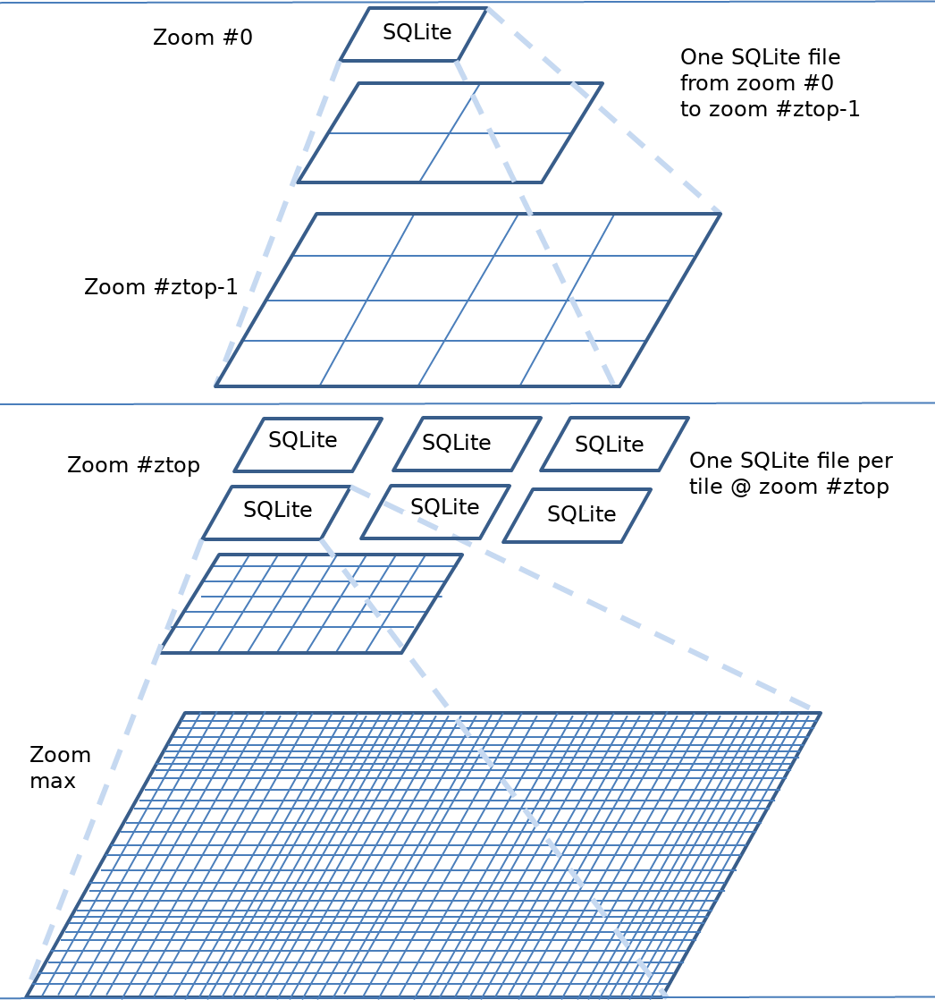

Cache Types¶
- Author:
Thomas Bonfort
- Contact:
tbonfort at terriscope.fr
This document details the different cache backends that can be used to store tiles.
Disk Caches¶
The disk based cache is the simplest cache to configure, and the one with the the fastest access to existing tiles. It is ideal for small tile repositories, but will often cause trouble for sites hosting millions of tiles, as the number of files or directories may rapidly overcome the capabilities of the underlying filesystem. Additionally, the block size chosen for the filesystem must closely match the mean size of a stored tile: ideally, any given tile should just fit inside a filesystem block, so as not to waste storage space inside each block, and not have to use up multiple blocks per tile.
The location of the files/directories has to be readable and writable by the user running the tile server.
Common Configuration¶
Disk caches are added via
<cache name="disk_cache" type="disk" layout="...">
...
<symlink_blank/>
<creation_retry>3</creation_retry>
</cache>
All caches except the “template” one support the <symlink_blank/> option which (depending on platform availability) will detect tiles of uniform color and create a symbolic link to a single uniform color tile instead of storing the actual blank data in the tile’s file.
All caches support the <creation_retry> option, which specifies the number of times MapCache should retry if it failed to create a tile’s file or symlink. The default is to fail immediately: You may want to set this to a positive value if using a network mounted filesystem where transient errors are common.
Default Structure¶
The default disk cache stores tiles in a structure nearly identical to the file/directory hierarchy used by TileCache. The only change is that a top level directory structure corresponding to the name of the grid and the eventual value of the tileset’s dimensions is added.
This cache is capable of detecting blank (i.e. uniform color) tiles and using a symbolic link to a single blank tile to gain disk space.
<cache name="disk" type="disk">
<base>/tmp</base>
<symlink_blank/>
</cache>
The only two configuration keys are the root directory where the tiles will be stored, and a key to activate the symbolic linking of blank tiles.
Arcgis Compatible Structure¶
<cache name="arcgis" type="disk" layout="arcgis">
<base>/tmp</base>
<symlink_blank/>
</cache>
This layout creates a tile structure compatible with an arcgis exploded cache. Tiles will be stored in files that resemble /tmp/{tileset}/{grid}/{dimension}/L{z}/R{y}/C{x}.{ext}
Worldwind Compatible Structure¶
<cache name="worldwind" type="disk" layout="worldwind">
<base>/tmp</base>
<symlink_blank/>
</cache>
This layout creates a tile structure compatible with a worldwind cache. Tiles will be stored in files that resemble /tmp/{tileset}/{grid}/{dimension}/{z}/{y}/{y}_{x}.ext
Template Structure¶
The template based disk cache allows you to create (or reuse an existing) tile structure that you define in advance. The <template> parameter takes a string argument where various template entries will be replaced at runtime by the correct value for each tile to store.
<cache name="tmpl" type="disk" layout="template">
<!-- template
string template that will be used to map a tile (by tileset, grid name, dimension,
format, x, y, and z) to a filename on the filesystem
the following replacements are performed:
- {tileset} : the tileset name
- {grid} : the grid name
- {dim} : a string that concatenates the tile's dimension
- {dim:dimname}: use the dimension value for dimname e.g. {dim:year} for year=2021 would
use the string 2021
- {ext} : the filename extension for the tile's image format
- {x},{y},{z} : the tile x,y,z values
- {inv_x}, {inv_y}, {inv_z} : inverted x,y,z values (inv_x = level->maxx - x - 1). This
is mainly used to support grids where one axis is inverted (e.g. the google schema)
and you want to create on offline cache.
* Note that this type of cache does not support blank-tile detection and symlinking.
* Warning: It is up to you to make sure that the template you chose creates a unique
filename for your given tilesets. e.g. do not omit the {grid} parameter if your
tilesets reference multiple grids. Failure to do so will result in filename
collisions !
-->
<template>/tmp/template-test/{tileset}#{grid}#{dim}/{z}/{x}/{y}.{ext}</template>
</cache>
Berkeley DB Caches¶
The Berkeley DB (BDB) cache backend stores tiles in a key-value flat-file database, and therefore does not have the disadvantages of disk caches with regards to the number of files stored on the filesystem. As the image blobs are stored contiguously, the block size chosen for the filesystem has no influence on the storage capacity of the volume.
Note that for a given BDB cache, only a single database file is created, which will store the tiles of its associated tilesets (i.e. there is not a database file created per tileset, grid, and/or dimension). If you need to store different tilesets to different files, then use multiple BDB cache entries. It is not possible to use multiple database files for tileset grids or dimensions.
The Berkeley DB based caches are a bit faster than the disk based caches during reads, but may be a bit slower during concurrent writes if a high number of threads all try to insert new tiles concurrently.
<cache name="bdb" type="bdb">
<!-- base (required)
absolute filesystem path where the Berkeley DB database file is to be stored.
this directory must exist, and be writable
-->
<base>/tmp/foo/</base>
<!-- key_template (optional)
string template used to create the key for a tile entry in the database.
defaults to the value below. you should include {tileset}, {grid} and {dim} here
unless you know what you are doing, or you will end up with mixed tiles
<key_template>{tileset}-{grid}-{dim}-{z}-{y}-{x}.{ext}</key_template>
-->
</cache>
Lightning Memory-Mapped Database Caches¶
Added in version 1.14.0.
The Lightning Memory-Mapped Database (LMDB) cache backend is similar to the Berkeley DB backend. It stores tiles in a key-value flat-file database, and therefore does not have the disadvantages of disk caches with regards to the number of files stored on the filesystem.
Note that for a given LMDB cache, only a single database file is created, which will store the tiles of its associated tilesets (i.e. there is not a database file created per tileset, grid, and/or dimension). If you need to store different tilesets to different files, then use multiple LMDB cache entries. It is not possible to use multiple database files for tileset grids or dimensions.
LMDB is a memory-mapped database thus it will show up as a memory used by the process. Note that LMDB might not work with remote file systems as they must support flock(), memory map sync etc. and should not be accessed from multiple hosts.
<cache name="lmdb" type="lmdb">
<!-- base (required)
absolute filesystem path where the LMDB database file is to be stored.
this directory must exist, and be writable
-->
<base>/tmp/foo/</base>
<!-- key_template (optional)
string template used to create the key for a tile entry in the database.
defaults to the value below. you should include {tileset}, {grid} and {dim} here
unless you know what you are doing, or you will end up with mixed tiles
<key_template>{tileset}-{grid}-{dim}-{z}-{y}-{x}.{ext}</key_template>
-->
<!-- max_size (optional)
maximum size of database in thousands of _SC_PAGESIZE.
defaults to 64 that equals 250MiB on most of systems with 4k pagesize.
database can only be grown larger (requires a restart).
when db size will reach the max_size setting, any write attempt will
result in an error message.
<max_size>64</max_size>
-->
<!-- max_readers (optional)
maximum simultaneous reader count. should be higher than web server
process / thread count.
defaults to 126.
<max_readers>126</max_readers>
-->
</cache>
SQLite Caches¶
There are two different SQLite caches that vary by the database schema they create and query. SQLite caches have the advantage that they store tiles as blobs inside a single database file, and therefore do not have the disadvantages of disk caches with regards to the number of files stored. As the image blobs are stored contiguously, the block size chosen for the filesystem has no influence on the storage capacity of the volume.
The SQLite based caches are a bit slower than the disk based caches, and may have write-locking issues at seed time if a high number of threads all try to insert new tiles concurrently.
Default Schema¶
Tiles are stored in the configured SQLite file created by MapCache with
create table if not exists tiles(
tileset text,
grid text,
x integer,
y integer,
z integer,
data blob,
dim text,
ctime datetime,
primary key(tileset,grid,x,y,z,dim)
);
<cache name="sqlite" type="sqlite3">
<dbfile>/path/to/dbfile.sqlite3</dbfile>
</cache>
You may also add custom SQLite pragmas that will be executed when first connecting to a SQLite db, e.g. to override some compiled-in SQLite defaults
<cache name="sqlite" type="sqlite3">
<dbfile>/tmp/sqlitefile.db</dbfile>
<pragma name="max_page_count">10000000</pragma>
</cache>
<pragma> entries will result in a call to
PRAGMA max_page_count = 1000000;
Custom Schema¶
This cache can use any database schema: It is up to you to supply the SQL that will be executed to select or insert a new tile.
In order to use such functionality you should supply the SQL queries that will be used against your custom schema. It is up to you to make sure your queries are correct and will return the correct data for a given tileset, dimension, grid, x, y and z.
<cache name="sqlitecustom" type="sqlite3">
<dbfile>/tmp/sqlitefile.db</dbfile>
<queries>
<create>create table if not exists tiles(tileset text, grid text, x integer, y integer, z integer, data blob, dim text, ctime datetime, primary key(tileset,grid,x,y,z,dim))</create>
<exists>select 1 from tiles where x=:x and y=:y and z=:z and dim=:dim and tileset=:tileset and grid=:grid</exists>
<get>select data,strftime("%s",ctime) from tiles where tileset=:tileset and grid=:grid and x=:x and y=:y and z=:z and dim=:dim</get>
<set>insert or replace into tiles(tileset,grid,x,y,z,data,dim,ctime) values (:tileset,:grid,:x,:y,:z,:data,:dim,datetime('now'))</set>
<delete>delete from tiles where x=:x and y=:y and z=:z and dim=:dim and tileset=:tileset and grid=:grid</delete>
</queries>
</cache>
Note that for the <get> query that returns data for a given tile, the first returned argument is considered to be the image blob, and the second optional one a timestamp representing the creation timestamp for that tile.
Blank Tile Detection¶
MapCache’s SQLite caches support the detection and storage of blank (i.e. uniform color) tiles, and will store a quadruplet of the rgba color component in the data blob instead of the compressed image data itself. That quadruplet will be transformed on-the-fly to a 1-bit paletted PNG before being returned to the client.
<cache name="sqliteblank" type="sqlite3">
<dbfile>/tmp/sqlitefile.db</dbfile>
<detect_blank/>
</cache>
Note
SQLite files created with this option will only be fully understood by MapCache as each tile blob may contain a #rgba quadruplet instead of the expected PNG or JPEG data.
Using Multiple SQLite Database Files¶
You may want to split an SQLite cache into multiple files, for organisational purposes, or to keep the size of each file to a reasonable limit if caching large amounts of data.
In order to do so you may use a template to determine which file should be used for a given file:
<cache name="sqlite" type="sqlite3">
<dbfile>/path/to/{grid}/{dim}/{tileset}.sqlite3</dbfile>
</cache>
You may also limit the x and y number of tiles to be stored inside a single database file:
<cache name="sqlite" type="sqlite3">
<dbfile>/path/to/{grid}/{dim}/{tileset}/{z}/{x}-{y}.sqlite3</dbfile>
<xcount>1000</xcount>
<ycount>1000</ycount>
</cache>
In this case you should include the {x}, {y} and {z} replacements in the template determining the file to use. In the previous example, tile (z,x,y)=(15,3024,1534) would be stored in a file named /path/to/g/mytileset/15/3000-1000.sqlite3 and tile (5,2,8) would be stored in a file named /path/to/g/mytileset/5/0-0.sqlite3
The following template keys are available for operating on the given tile’s x,y, and z:
{z} is replaced by the zoom level.
{x} is replaced by the x value of the leftmost tile inside the SQLite file containing the requested tile.
{inv_x} is replaced by the x value of the rightmost tile.
{y} is replaced by the y value of the bottommost tile.
{inv_y} is replaced by the y value of the topmost tile.
{div_x} is replaced by the index of the SQLite file starting from the left of the grid (i.e. {div_x} = {x}/<xcount>).
{inv_div_x} same as {div_x} but starting from the right.
{div_y} is replaced by the index of the SQLite file starting from the bottom of the grid (i.e. {div_y} = {y}/<ycount>).
{inv_div_y} same as {div_y} but starting from the top.
Note
{inv_x} and {inv_div_x} will probably be rarely used, whereas {inv_y} and {inv_div_y} will find some usage by people who prefer to index their dbfile files from top to bottom rather than bottom to top.
Note
Dimension values, replacing {dim} template, can’t hold multiple directory names (i.e. can’t contain ‘/’ separator). This constraint can be bypassed under specific conditions that are further detailed in MS RFC 131: Allow file paths in MapCache second level dimension values.
In some cases, it may be desirable to have a precise hand on the filename to use for a given x,y,z tile lookup, e.g. to look for a file named Z03-R00003-C000009.sqlite3 instead of just Z3-R3-C9.sqlite3. The <dbfile> entry supports formatting attributes, following the Unix printf syntax ( c.f.: https://linux.die.net/man/3/printf ), by suffixing each template key with “_fmt”, e.g.:
<cache name="mysqlite" type="sqlite3">
<dbfile
x_fmt="%08d"
inv_y_fmt="%08d"
>/data/{tileset}/{grid}/L{z}/R{inv_y}/C{x}.sqlite</template>
</cache>
Note
If not specified, the default behavior is to use “%d” for formatting.
Using Multiple pyramids in multiple SQLite database files (Z-top)¶
Another way of structuring SQLite caches consists in organizing them in multiple pyramids: one single pyramid on lowest zoom levels, then as many pyramids as tiles at a given zoom level, e.g. 8, referred to as top zoom level. Each of these pyramids starts with one tile at that top zoom level, then four tiles at next zoom level and so on. Of course the top zoom level value is configurable.
The main advantage of this structure is when a user wants to work offline with only a subset of the World: Only two (relatively small) SQLite files have to be copied.
Following is a figure illustrating this cache structure.

From a configuration point of view, a multi-SQLite cache of class ztop is specified with a <top> tag defining the top zoom level. Templates keys are needed to determine SQLite files to use.
<!-- multi-pyramid, multi-SQLite, starting at zoom level 8 -->
<cache name="z8" type="sqlite3">
<top>8</top>
<dbfile top_fmt="%02d">/path/to/z{top}-{top_x}-{top_y}.sqlite3</dbfile>
</cache>
<!-- single cache from zoom levels 0 to 7 -->
<cache name="z1-7" type="sqlite3">
<dbfile>/path/to/z0-0-0.sqlite3</dbfile>
</cache>
<!-- Composite cache made of all caches to address all zoom levels -->
<cache name="zfull" type="composite">
<cache min-zoom="0" max-zoom="7">z1-7</cache>
<cache min-zoom="8">z8</cache>
</cache>
The following template keys are available:
{top} is replaced by the top zoom level.
{top_x} is replaced by the x value of the tile index at top zoom level, starting from left
{top_y} is replaced by the y value of the tile index at top zoom level, starting from bottom
{inv_top_x} is replaced by the x value of the tile index at top zoom level, starting from right
{inv_top_y} is replaced by the y value of the tile index at top zoom level, starting from top
The following formatting attributes are available: top_fmt, top_x_fmt, top_y_fmt, inv_top_x_fmt, inv_top_y_fmt. They default to “%d”.
MBTiles Caches¶
This cache type is a shortcut to the previous custom schema SQLite cache, with pre-populated SQL queries that correspond to the MBTiles specification.
Although the default MBTiles schema is very simple, MapCache uses the same multi- table schema found in most downloadable MBTiles files, notably to enable storing blank (i.e. uniform) tiles without duplicating the encoded image data (in the same way the disk cache supports tile symlinking).
The MBTiles schema is created with:
create table if not exists images(
tile_id text,
tile_data blob,
primary key(tile_id));
create table if not exists map (
zoom_level integer,
tile_column integer,
tile_row integer,
tile_id text,
foreign key(tile_id) references images(tile_id),
primary key(tile_row,tile_column,zoom_level));
create table if not exists metadata(
name text,
value text); -- not used or populated yet
create view if not exists tiles
as select
map.zoom_level as zoom_level,
map.tile_column as tile_column,
map.tile_row as tile_row,
images.tile_data as tile_data
from map
join images on images.tile_id = map.tile_id;
<cache name="mbtiles" type="mbtiles">
<dbfile>/Users/XXX/Documents/MapBox/tiles/natural-earth-1.mbtiles</dbfile>
</cache>
Note
Contrarily to the standard SQLite MapCache schema, the MBTiles db file only supports a single tileset per cache. The behavior if multiple tilesets are associated to the same MBTiles cache is undefined, and will definitely produce incorrect results.
Warning
When working with multiple processes (-p switch) and SQLite cache backends, some errors may appear under high concurrency when writing to the SQLite database (error: SQL logic error or missing database (1)). Upgrading to SQLite >= 3.7.15 seems to resolve this issue.
Memcache Caches¶
This cache type stores tiles to an external memcached server running on the local machine or accessible on the network. This cache type has the advantage that memcached takes care of expiring tiles, so the size of the cache will never exceed what has been configured in the memcache instance.
Memcache support requires a rather recent version of the apr-util library. Note that under very high loads (usually only attainable on synthetic benchmarks on localhost), the memcache implementation of apr-util may fail and start dropping connections for some intervals of time before coming back online afterwards.
You can add multiple <server> entries.
<cache name="memcache" type="memcache">
<server>
<host>localhost</host>
<port>11211</port>
</server>
</cache>
Note
Tiles stored in memcache backends are configured to expire in 1 day by default. This can be overridden at the tileset level with the <auto_expire> keyword.
To limit the memory used by blank tiles inside the memcache instance, you may enable blank tile detection, in which case a #rgba quadruplet will be stored to the cache instead of the actual image data. MapCache will convert that on-the-fly to a 1-bit paletted PNG image before returning it to the client.
<cache name="memcache" type="memcache">
<detect_blank/>
...
</cache>
(Geo)TIFF Caches¶
TIFF caches are the most recent addition to the family of caches, and use the internal tile structure of the TIFF specification to access tile data. Tiles can be stored in JPEG only (TIFF does not support PNG tiles).
As a single TIFF file may contain many tiles, there is a drastic reduction in the number of files that have to be stored on the filesystem, which solves the major shortcomings of the disk cache. Another advantage is that the same TIFF files can be used by programs or WMS servers that only understand regular GIS raster formats, and be served up with high performance for tile access.
The TIFF cache should be considered read-only for the time being. Write access is already possible but should be considered experimental as there might be some file corruption issues, notably on network filesystems. Note that until all the tiles in a given TIFF file have been seeded/created, the TIFF file is said to be “sparse” in the sense that it is missing a number of JPEG tiles. As such, most non-GDAL based programs will have problems opening these incomplete files.
Note that the TIFF tile structure must exactly match the structure of the grid used by the tileset, and the TIFF file names must follow strict naming rules.
Defining the TIFF File Sizes¶
The number of tiles stored in each of the horizontal and vertical directions must be defined:
<xcount> the number of tiles stored along the x (horizontal) direction of the TIFF file
<ycount> the number of tiles stored along the y (vertical) direction of the TIFF file
<cache name="tiff" type="tiff">
<xcount>64</xcount>
<ycount>64</ycount>
...
</cache>
Setting Up the File Naming Convention¶
The <template> tag sets the template to use when looking up a TIFF file name given the x,y,z of the requested tile
<cache name="tiff" type="tiff">
<template>/data/tiffs/{tileset}/{grid}/L{z}/R{inv_y}/C{x}.tif</template>
...
</cache>
The following template keys are available for operating on the given tile’s x,y, and z:
{x} is replaced by the x value of the leftmost tile inside the TIFF file containing the requested tile.
{inv_x} is replaced by the x value of the rightmost tile.
{y} is replaced by the y value of the bottommost tile.
{inv_y} is replaced by the y value of the topmost tile.
{div_x} is replaced by the index of the TIFF file starting from the left of the grid (i.e. {div_x} = {x}/<xcount>).
{inv_div_x} same as {div_x} but starting from the right.
{div_y} is replaced by the index of the TIFF file starting from the bottom of the grid (i.e. {div_y} = {y}/<ycount>).
{inv_div_y} same as {div_y} but starting from the top.
Note
{inv_x} and {inv_div_x} will probably be rarely used, whereas {inv_y} and {inv_div_y} will find some usage by people who prefer to index their TIFF files from top to bottom rather than bottom to top.
Customizing the Template Keys¶
In some cases, it may be desirable to have a precise hand on the filename to use for a given x,y,z tile lookup, e.g. to look for a file named “Z03-R00003-C000009.tif” instead of just “Z3-R3-C9.tif”. The <template> entry supports formatting attributes, following the Unix printf syntax ( c.f.: http://linux.die.net/man/3/printf ), by suffixing each template key with “_fmt”, e.g.:
<cache name="tiff" type="tiff">
<template
x_fmt="%08d"
inv_y_fmt="%08d"
>/data/tiffs/{tileset}/{grid}/L{z}/R{inv_y}/C{x}.tif</template>
</cache>
Note
If not specified, the default behavior is to use “%d” for formatting.
Setting JPEG Compression Options¶
An additional optional parameter defines which JPEG compression should be applied to the tiles when saved into the TIFF file:
<format> the name of the (JPEG) format to use
See also
<cache name="tiff" type="tiff">
...
<format>myjpeg</format>
</cache>
In this example, assuming a grid using 256x256 tiles, the files that are read to load the tiles are tiled TIFFs with JPEG compression, whose size are 16384x16384. The number of files to store on disk is thus reduced 4096 times compared to the basic disk cache.
Using a Specific Locker¶
MapCache needs to create a lock when writing inside a TIFF file to ensure that no two instances are updating the same file concurrently. By default the global MapCache locker will be used; you can, however, configure a different locking mechanism or behavior by configuring it inside the TIFF cache itself.
See also
<cache name="tiff" type="tiff">
...
<locker> .... </locker>
</cache>
GeoTIFF Support¶
If compiled with GeoTIFF and write support, MapCache will add referencing information to the TIFF files it creates, so that the TIFF files can be used in any GeoTIFF-enabled software. Write support does not produce full GeoTIFFs with the definition of the projection used, but only the pixel scale and tie-points, i.e. what is usually found in .tfw files.
For reference, here is the gdalinfo output on a TIFF file created by MapCache when compiled with GeoTIFF support:
LOCAL_CS["unnamed",
UNIT["metre",1,
AUTHORITY["EPSG","9001"]]]
Origin = (-20037508.342789247632027,20037508.342789247632027)
Pixel Size = (156543.033928040997125,-156543.033928040997125)
Metadata:
AREA_OR_POINT=Area
Image Structure Metadata:
COMPRESSION=YCbCr JPEG
INTERLEAVE=PIXEL
SOURCE_COLOR_SPACE=YCbCr
Corner Coordinates:
Upper Left (-20037508.343,20037508.343)
Lower Left (-20037508.343,-20037508.343)
Upper Right (20037508.343,20037508.343)
Lower Right (20037508.343,-20037508.343)
Center ( 0.0000000, 0.0000000)
REST Caches¶
The following cache types store and retrieve tiles through standard HTTP GET and PUT operations, and can be used to store tiles in popular cloud storage providers.
Pure REST Cache¶
This cache type can be used to store tiles to a WebDAV enabled server. You must provide a template URL that should be used when accessing a tile with a given x,y,z, etc…
<cache name="myrestcache" type="rest">
<url>https://myserver/webdav/{tileset}/{grid}/{z}/{x}/{y}.{ext}</url>
</cache>
Specifying HTTP Headers¶
You can customize which headers get added to the HTTP request, either globally for every HTTP request, or specifically for a given type of request (i.e. when getting, setting or deleting a tile):
<cache name="myrestcache" type="rest">
<url>https://myserver/webdav/{tileset}/{grid}/{z}/{x}/{y}.{ext}</url>
<headers>
<Host>my-virtualhost-alias.domain.com</Host>
</headers>
<operation type="put">
<headers>
<X-my-specific-put-header>foo</X-my-specific-put-header>
</headers>
</operation>
<operation type="get">
<headers>
<X-my-specific-get-header>foo</X-my-specific-get-header>
</headers>
</operation>
<operation type="head">
<headers>
<X-my-specific-head-header>foo</X-my-specific-head-header>
</headers>
</operation>
<operation type="delete">
<headers>
<X-my-specific-delete-header>foo</X-my-specific-delete-header>
</headers>
</operation>
</cache>
Amazon S3 REST Caches¶
The REST cache has been specialized to enable access to Amazon S3, in order to add the layer of authentication/authorization needed for that platform.
<cache name="s3" type="s3">
<url>https://foo.s3.amazonaws.com/tiles/{tileset}/{grid}/{z}/{x}/{y}/{ext}</url>
<headers>
<Host>foo.s3.amazonaws.com</Host>
</headers>
<id>AKIE3SDEIT6TUG8DXEQI</id>
<secret>5F+dGsTfsdfkjdsfSDdasf4555d/sSff56sd/RDS</secret>
<region>eu-west-1</region>
<operation type="put">
<headers>
<x-amz-storage-class>REDUCED_REDUNDANCY</x-amz-storage-class>
<x-amz-acl>public-read</x-amz-acl>
</headers>
</operation>
</cache>
The <id> <secret> and <region> tags are required and are obtained and configured through your Amazon management console. You should read the documentation as to what headers you want to be adding to your requests depending on your use case (the supplied example hosts tiles on cheaper storage, and allows them to be publicly accessible).
Microsoft Azure REST Caches¶
The REST cache has been specialized to enable access to Azure storage, in order to add the layer of authentication/authorization needed for that platform.
<cache name="azure" type="azure">
<url>https://foo.blob.core.windows.net/tiles/{tileset}/{grid}/{z}/{x}/{y}/{ext}</url>
<headers>
<Host>foo.blob.core.windows.net</Host>
</headers>
<id>foo</id>
<secret>foobarcccccccccccccccccccccyA==</secret>
<container>tiles</container>
</cache>
The <id> <secret> and <container> tags are required and are obtained and configured through your management console. You should read the documentation as to what headers you want to be adding to your requests depending on your use case.
Google Cloud Storage REST Caches¶
The REST cache has been specialized to enable access to Google Cloud Storage, in order to add the layer of authentication/authorization needed for that platform.
<cache name="google" type="google">
<url>https://storage.googleapis.com/mytiles-mapcache/{tileset}/{grid}/{z}/{x}/{y}.{ext}</url>
<access>GOOGPGDWFDG345SDFGSD</access>
<secret>sdfgsdSDFwedfwefr2345324dfsGdsfgs</secret>
<operation type="put">
<headers>
<x-amz-acl>public-read</x-amz-acl>
</headers>
</operation>
</cache>
The <access> and <secret> tags are required and are obtained and configured through your management console. You should read the documentation as to what headers you want to be adding to your requests depending on your use case. Note that support for Google Cloud Storage uses its Amazon compatibility layer.
Meta Caches¶
These cache types do not store tiles themselves, but rather delegate the storage of a tile to a number of child caches based on a set of rules or behaviors. These caches are mostly useful for large MapCache deployments across multiple instances, with shared cache backends (i.e. dedicated memcache servers, and network mounted filer filesystems).
Composite Caches¶
This cache uses different child caches depending on the tile’s zoom level, and can be used for example to store low zoom-level tiles to permanent storage, and higher zoom-level tiles to a temporary (i.e. memcache) cache.
<cache name="mydisk" ...> ... </cache>
<cache name="mymemcache" ...> ... </cache>
<cache name="composite" type="composite">
<cache grids="mygrid,g">mycache</cache>
<cache min-zoom="0" max-zoom="8">mydisk</cache>
<cache min-zoom="9">mymemcache</cache>
</cache>
<tileset ...>
<cache>composite</cache>
...
</tileset>
For each tile, the caches are tested in the order in which they have been defined in the configuration file, and the first one to satisfy the min/max zoom and grids constraints is used. It’s up to the user to make sure the succession of min/max zoom values and grids makes sense, e.g.:
<cache name="composite" type="composite">
<cache min-zoom="0">cache1</cache>
<cache min-zoom="9">this_cache_will_never_be_used</cache>
</cache>
Fallback Caches¶
These cache types will return tiles from the first configured subcache that does not return an error. They can be used when one of the caches is prone to error conditions (e.g. remote REST caches, memcache)
<cache name="fallback" type="fallback">
<cache>mymemcache</cache>
<cache>mysqlitecache</cache>
</cache>
When writing a tile to such a cache, it will be written to all the child caches.
Multitier Caches¶
These cache types can be used to combine fast/expensive caches with slow/cheap ones.
<cache name="multitier" type="multitier">
<cache>fast</cache>
<cache>cheap</cache>
</cache>
If a given tile isn’t found in the first child cache, it will be read from the second child cache and copied into the first child cache for subsequent accesses. This cache type is meant to be used when the first cache does automatic pruning of the least recently used tiles (i.e. a memcache one).
When writing a tile to such a cache, it will be written to the last child.
Cache Combinations¶
All these meta caches can be combined together to fine tune the availability and performance depending on storage costs, time to recreate missing tiles, etc…
<cache name="slow_and_permanent" type="sqlite">...</cache>
<cache name="fast_and_transient" type="memcache">...</cache>
<cache name="low_zooms" type="multitier">
<cache>fast_and_transient</cache>
<cache>slow_and_permanent</cache>
<cache>
<cache name="mycache" type="composite">
<cache maxzoom="12">low_zooms</cache>
<cache>fast_and_transient</cache>
<cache>
<tileset>
<cache>mycache</cache>
...
</tileset>
In the previous example, all tiles are primarily accessed from a memcache instance, however the lower zoom level tiles are backed up to a permanent SQLite cache which will be used to populate the fast memcache cache e.g. on restarts.
Riak Caches¶
requires https://github.com/trifork/riack
<cache name="myriak" type="riak">
<server>
<host>riakhost</host>
<port>12345</port>
<bucket>mytiles</bucket>
</server>
</cache>